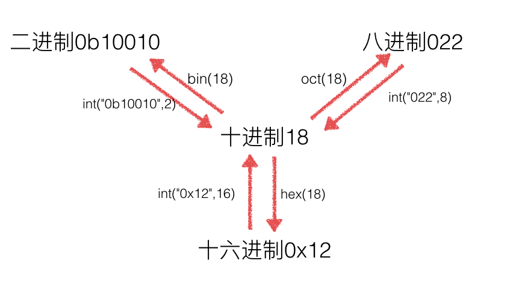
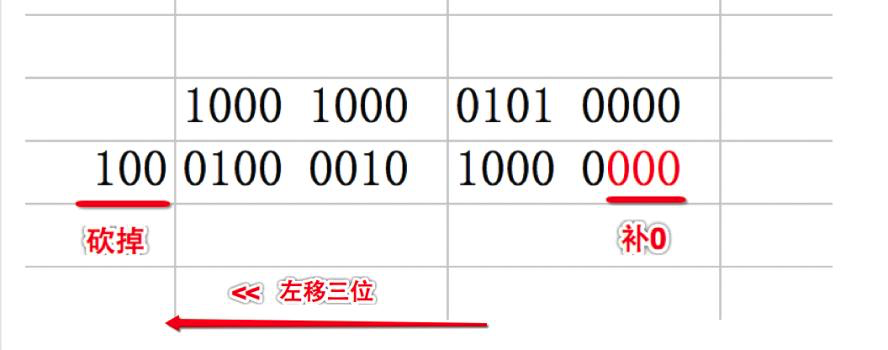
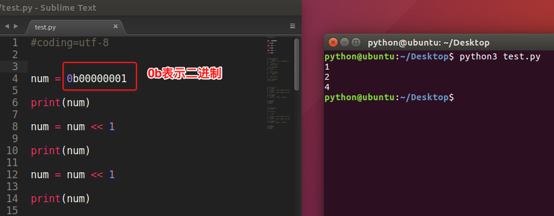
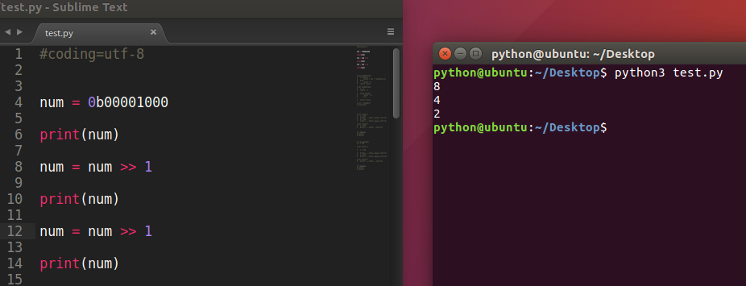
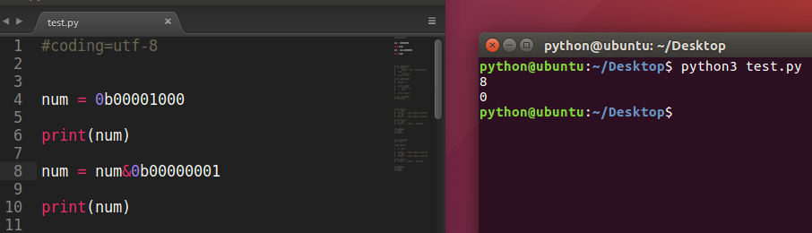
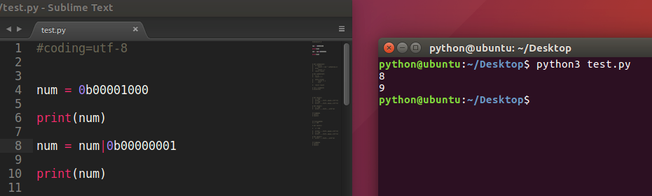
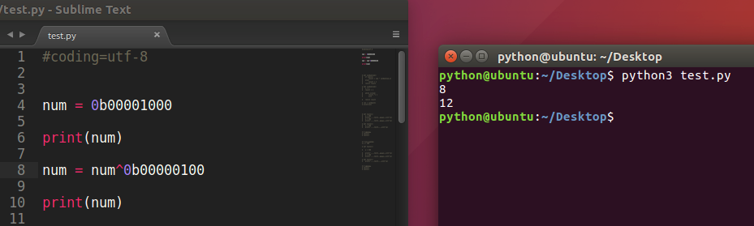
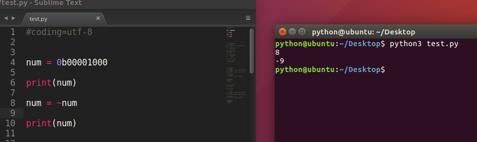

进制、位运算
1、什么是进制
1）理解个X进制的概念 :
每一位 只允许出现 0~X-1 这几个数字,逢X进一,基是X, 每一位有一个权值大小是X的幂次。 其表示的数值可以写成按位权展开的多项式之和。
十进制: 每一位只允许出现0~9这十个数字,逢十进1,基是十,每一位数字有一个 权值大小是十的幂次。 其表示的数值可以写成按位权展开的多项式之和。
二进制: 每一位只允许出现0~1这二个数字,逢二进1,基是 二, 每一位数字有一个权值大小是二的幂次。 其表示的数值可以写成按位权展开的多项式之和。
八进制:逢八进一
十六进制：逢十六进一
2）
假如用两个字节表示 一个整数， 如下：
十进制数字1 的二进制表现形式: 0000 0000 0000 0001
十进制数字2 的二进制表现形式: 0000 0000 0000 0010
如何表示二进制数的正负？
3）有符号数和无符号数的概念
规则：把二进制数中的最高位（最左边的那位）用作符号位
对于有符号数，最高位被计算机系统规定为符号位(0为正,1为负)
对于无符号数，最高位被计算机系统规定为数据位
按照这种说法，比如有符号数 +2 -2 的原码形式：
+2 = 0000 0000 0000 0010
-2 = 1000 0000 0000 0010
真值 机器数
+1 = 0000 0000 0000 0001
-1 = 1000 0000 0000 0001
-----------------------------------------
1000 0000 0000 0010
-1+1 的结果？
-1+1 = 1000 0000 0000 0010 ----》 -2
不等于0，按理说-1+1等于0才对，为什么会是-2呢？
规则
数字在计算机中，是用二进制补码的形式来保存的，因此-1 +1需要按照补码进行相加才是正确的结果
2、原码、反码、补码
1）如何计算补码？
规则:
正数：原码 = 反码 = 补码
负数：反码 = 符号位不变，其他位取反
补码 = 反码+1
1 的原码：0000 0000 0000 0001
-1的原码：1000 0000 0000 0001
-1的反码：1111 1111 1111 1110
-1的补码：1111 1111 1111 1111
重新计算 -1+1 结果
1111 1111 1111 1111
0000 0000 0000 0001
---------------------------
0000 0000 0000 0000
2）从补码转回原码
负数补码转换原码的规则:
原码 = 补码的符号位不变 -->数据位取反--> 尾+1
-1的补码:1111 1111 1111 1111
取反:1000 0000 0000 0000
-1的原码:1000 0000 0000 0001
【了解】
可以把减法用加法来算，只需设计加法器就好了。运算的时候都是用补码去运算的。 2-1 = 2+(-1)=0000 0000 0000 0010 +1111 1111 1111 1111
【了解】
为何要使用原码, 反码和补码 既然原码才是被人脑直接识别并用于计算表示方式, 为何还会有反码和补码呢? 首先, 因为人脑可以知道第一位是符号位, 在计算的时候我们会根据符号位, 选择对应加减，但是对于计算机，加减乘数已经是最基础的运算, 要设计的尽量简单。计算机辨别"符号位"显然会让计算机的基础电路设计变得十分复杂！于是人们想出了将符号位也参与运算的方法. 我们知道，根据运算法则减去一个正数等于加上一个负数, 即: 1-1 = 1 + (-1) = 0 , 所以机器可以只有加法而没有减法, 这样计算机运算的设计就更简单了.于是人们开始探索 将符号位参与运算, 并且只保留加法的方法
3. 进制间转换
#10进制转为2进制
>>> bin(10)
'0b1010'
#2进制转为10进制
>>> int("1001",2)
9
#10进制转为16进制
>>> hex(10)
'0xa'
#16进制到10进制
>>> int('ff', 16)
255
>>> int('0xab', 16)
171
#16进制到2进制
>>> bin(0xa)
'0b1010'
>>>
#10进制到8进制
>>> oct(8)
'010'
#2进制到16进制
>>> hex(0b1001)
'0x9'

4. 位运算
看如下示例:
如果有一个十进制数 5，其二进制为:
0000 0101把所有的数向左移动一位 其结果为:
0000 1010想一想:二进制 0000 1010 十进制是多少呢？？？其答案为10，有没有发现是5的2倍呢！
再假设有一个十进制数 3， 其二进制 为:
0000 0011把所有的数向左移动一位 其结果为:
0000 0110二进制0000 0110 的十进制为6，正好也是3的2倍
通过以上2个例子，能够看出，把一个数的各位整体向左移动一个位，就变成原来的2倍
那么在Python中，怎样实现向左移动呢？还有其他的吗？？？
<1>位运算的介绍
- & 按位与
- | 按位或
- ^ 按位异或
- ~ 按位取反
- < < 按位左移
>> 按位右移
用途: 直接操作二进制,省内存,效率高
<2>位运算
1）<< 按位左移
各二进位全部左移n位,高位丢弃,低位补0

x << n 左移 x 的所有二进制位向左移动n位,移出位删掉,移进的位补零
【注意事项】
- a. 左移1位相当于 乘以2
- 用途:快速计算一个数乘以2的n次方 (8<<3 等同于8*2^3)
b.左移可能会改变一个数的正负性

2)>> 右移
各二进位全部右移n位,保持符号位不变
x >> n x的所有二进制位向右移动n位,移出的位删掉,移进的位补符号位 右移不会改变一个数的符号
【注意事项】
- 右移1位相当于 除以2
- x 右移 n 位就相当于除以2的n次方 用途:快速计算一个数除以2的n次方 (8>>3 等同于8/2^3)

3)& 按位与
全1才1否则0 :只有对应的两个二进位均为1时,结果位才为1,否则为0
用6和3这个例子。不要用9 和13的例子

4) | 按位或
有1就1 只要对应的二个二进位有一个为1时,结果位就为1,否则为0

5) ^ 按位异或
不同为1 当对应的二进位相异(不相同)时,结果为1,否则为0

6) ~ 取反
~9 = -10

【为什么9取反变成了-10的说明】：
9的原码 ==> 0000 1001 因为正数的原码=反码=补码，所以在 真正存储的时候就是0000 1001
接下来进行对9的补码进行取反操作
进行取反==> 1111 0110 这就是对9 进行了取反之后的补码
既然已经知道了补码，那么接下来只要转换为 咱们人能识别的码型就可以，因此按照规则 ，把这个1111 0110 这个补码 转换为原码即可
符号位不变，其它位取反==> 1000 1001
然后+1 ，得到原码 =======>1000 1010 这就是 -10
【扩展】
1)任何数和1进行&操作,得到这个数的最低位 数字&1 = 数字的二进制形式的最低位
2)位运算优先级